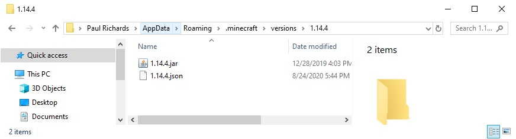
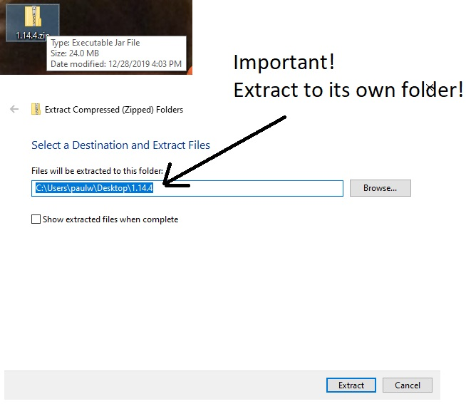
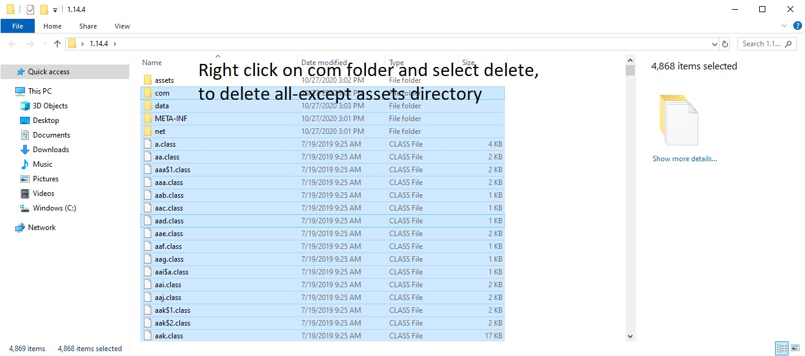
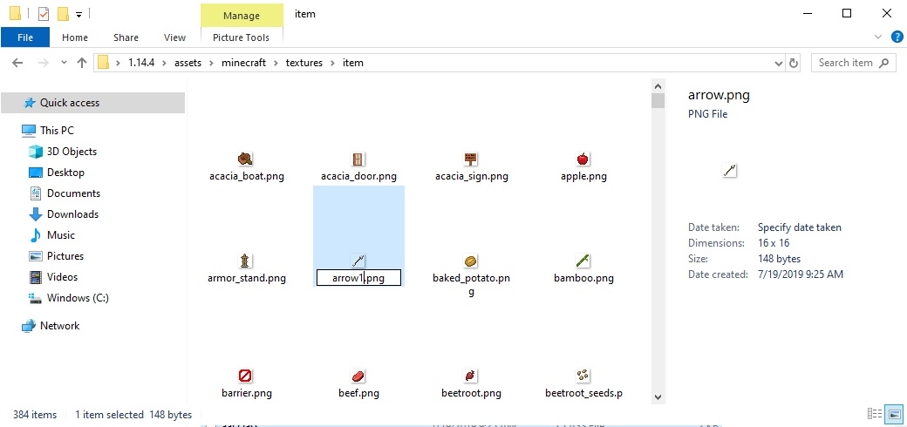
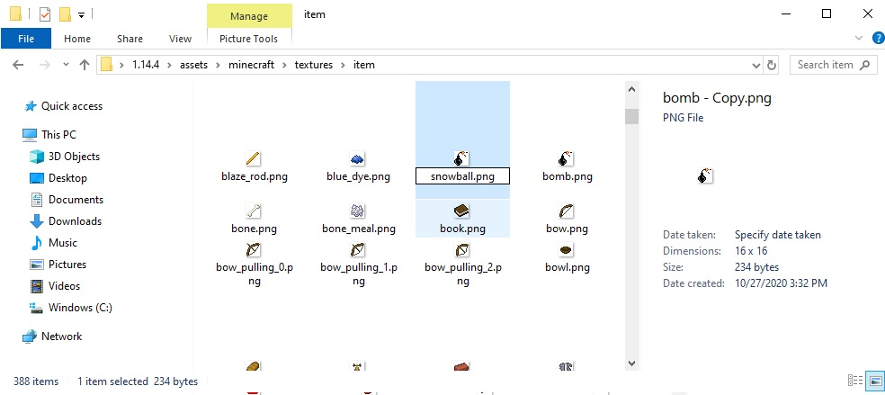
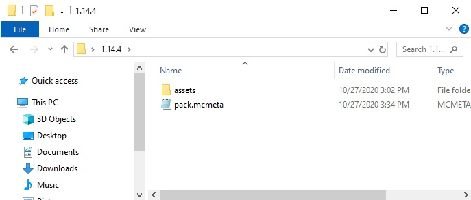

Navigate to Roaming/.minecraft/versions/1.14.4

Copy 1.14.jar to desktop and rename it to 1.14.zip
Right-click and extract all to its own folder (this will take a couple minutes)

Navigate into the extracted folder and select all files and folders (cntl-a) and this unselect assets (shift-left-click).
Then delete all selected files/folders (delete)

Navigate into the assets/minecraft/textures/item directory and rename arrow.png to arrow1.png. Also rename snowball.png snowball1.png

Copy over your fuel.png icon and bomb.png icon into the item directory. Then copy or rename fuel.png to arrow.png and bomb.png to snowball.png

Create a pack.mcmeta text file in the 1.14.4 root directory

Write and save the following to the pack.mcmeta file: